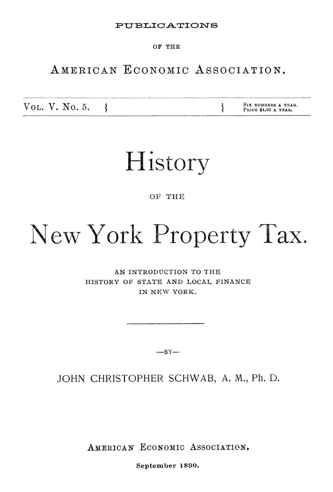

O imposto que contava bois e não enxergava ações
Leitura: 8 min
Em 1890, John Christopher Schwab contou dois séculos do imposto sobre a propriedade em Nova York: um tributo pensado para terra e gado que, diante de ações e créditos, só alcançava quem não podia se esconder.


Em 16 de setembro de 1675, a lista de avaliação de Southold, em Long Island, registrou o patrimônio de Richard Browne. Terra, bois, vacas, cavalos, ovelhas e porcos foram contados um a um, num total de 370 libras. Nada ali estava escondido: a riqueza de um agricultor do século XVII pastava à vista de todos.
É com listas assim que John Christopher Schwab reconstitui a origem do imposto geral sobre a propriedade, o tributo que pretende cobrar de cada pessoa na proporção de tudo o que possui, imóveis e bens móveis somados. O estudo, publicado em setembro de 1890 pela American Economic Association, acompanha o imposto por mais de dois séculos e chega a uma conclusão dura: o modelo que servia a Browne já não servia à Nova York das sociedades anônimas.
De onde veio o imposto sobre tudo o que se possui?
Não dos holandeses. Na Nova Holanda, a receita vinha quase toda de tarifas sobre o comércio e de impostos sobre cerveja e vinho, como na metrópole. Em 1654, em plena penúria, Pieter Stuyvesant criou uma taxa sobre terras, casas, lotes e gado, aprovada na Holanda como imposto especial de guerra. Era um recurso de emergência, não um sistema.
O imposto chegou com os ingleses. O leste de Long Island fora povoado quase só por colonos da Nova Inglaterra, que trouxeram o tributo a que estavam habituados. Por trás havia uma diferença econômica: a Nova Inglaterra era colônia de agricultores; a Nova Holanda, de comerciantes. Onde a riqueza é casa, campo e gado, medir a capacidade de pagar pelo patrimônio é justo e prático. Onde ela é mercadoria em trânsito, não.
A transição foi gradual. Em 1655, os burgomestres de Nova Amsterdã pediram uma subscrição voluntária, cada um segundo sua condição, com autorização para arbitrar o valor de quem se recusasse. A contribuição virava imposto sem mudar de nome. Com a Carta de Liberdades de 1683, nenhum tributo poderia ser lançado sem o consentimento da assembleia de representantes, e no mesmo ano veio a primeira lei geral de tributação e avaliação. Dali em diante, diz Schwab, o princípio não mudou: cada um paga na proporção de seu patrimônio total.
Por que a avaliação nunca chegou ao valor de mercado?
O problema apareceu cedo: em 1692, a Assembleia já pedia comissários em cada condado para acabar com tantas incertezas. A avaliação, isto é, a estimativa oficial do valor de cada bem sobre a qual se aplica a alíquota, era o ponto fraco do sistema, e continuaria sendo.
As correções se repetiram por um século. Tabelas de valores fixos para cada tipo de bem caíram em desuso; o juramento dos avaliadores foi reescrito várias vezes. Uma lei de 1770 mandava o contribuinte mostrar terras e gado, mas o dispensava expressamente de declarar dinheiro a receber, móveis, joias, prataria e roupas.
Em 1796, um relatório federal sobre impostos diretos, assinado por Oliver Wolcott, descreveu o sistema do estado numa frase:
“Nenhum objeto de tributação está definido nas leis, nem qualquer princípio de avaliação prescrito.” (“No objects of taxation are defined in the laws nor any principles of valuation prescribed.”)
A Constituição federal acentuou a dependência: os estados perderam as tarifas, e a União ficou com as fontes indiretas mais fartas. Restou a Nova York ampliar o imposto sobre a propriedade, que ofuscou os aluguéis de cais, balsas e mercados.
O desenho federativo piorou as coisas. A parcela estadual de cada condado era calculada sobre o total ali avaliado, e o condado repartia a sua entre os municípios. Quem avaliasse por baixo pagava menos aos níveis de cima: daí uma dupla competição pela menor avaliação possível. As juntas de equalização, que ajustam as avaliações entre distritos, não resolveram. A estadual, criada em 1859, só mexia nos imóveis e só alterava a cota de cada condado, não a conta de cada contribuinte.
O resultado era sabido. Nas cidades, na melhor hipótese, os imóveis eram avaliados entre metade e três quintos do valor de mercado; no interior, entre um terço e um quinto. E o contribuinte insatisfeito tinha caminho fácil nos tribunais: bastava mostrar que fora avaliado acima do vizinho, não acima do valor real.
Para onde foi a propriedade pessoal?
Se o imóvel era subavaliado, a propriedade pessoal, isto é, os bens móveis como dinheiro, créditos, ações e mercadorias, simplesmente sumia. Admitia-se que ela valia tanto quanto os imóveis do estado, mas não mais de um quinto chegava às listas de avaliação.
Os motivos eram práticos e jurídicos. O bem móvel precisa ser descoberto e ter sua localização legal definida antes de ser avaliado. Mercadorias importadas ainda na embalagem original eram isentas, e os importadores apareciam nas listas com patrimônio insignificante. Muitos moradores da cidade alegavam residência numa casa de verão em outro condado, ou em Nova Jersey, e uma simples declaração juramentada os livrava do imposto.
Quem pagava, então? Os bens de menores e os patrimônios administrados por fiduciários, que não tinham como passar despercebidos. O imposto que pretendia alcançar todos alcançava sobretudo quem não podia se esconder.
Que reforma o autor propunha?
Desde 1880 o estado buscava receitas próprias, como impostos sobre corporações e heranças colaterais. Para Schwab, isso não bastava. Os nova-iorquinos mais versados no assunto propunham abandonar o imposto sobre bens pessoais, que ele descreve sem rodeios:
“Uma mera farsa, calculada para premiar a desonestidade.” (“a mere farce and calculated to put a premium on dishonesty”)
Sua primeira conclusão é que o imposto geral sobre a propriedade não pode ser aplicado com justiça na Nova York de seu tempo: funcionara quando a riqueza era visível e tangível. A segunda vai além. Mesmo com avaliação perfeita, seria mau princípio medir a capacidade de pagar só pelo patrimônio. Contra a tese, aceita pelos tribunais, de que o imposto paga a proteção da propriedade, ele lembra John Stuart Mill: por essa lógica, os mais indefesos deveriam pagar mais.
“A propriedade, não o cidadão, é que é tributada.” (“Property, not the citizen, is taxed.”)
A saída que propõe é um imposto pessoal, dirigido ao cidadão e não às suas coisas, capaz de despertar o dever cívico que o sistema deixava adormecido. O imposto sobre imóveis manteria lugar nas finanças locais, e a reforma deveria começar pelas cidades, separando suas finanças das do interior. Schwab fecha com a esperança de que o país fizesse em uma ou duas gerações o que custou séculos à Inglaterra.
Na minha leitura
Na minha leitura, o valor duradouro do estudo está menos na proposta do que no diagnóstico. Schwab mostra que um tributo pode ser justo no desenho e injusto na prática, porque a justiça de um imposto depende da capacidade de enxergar a base tributária. Quando a riqueza muda de forma, do gado para os títulos, a lei que não muda passa a tributar apenas quem não consegue esconder.
O segundo ensinamento é federativo. Ao repartir o imposto estadual pela base avaliada em cada condado, Nova York incentivou todos a avaliar para baixo e depois tentou corrigir o efeito com juntas, juramentos e tabelas. Nada funcionou, porque nada alterava o incentivo.
Glossário
- Imposto geral sobre a propriedade
- Tributo que cobra de cada pessoa uma alíquota sobre o valor de todo o seu patrimônio, imóveis e bens móveis somados.
- Avaliação
- Estimativa oficial do valor de cada bem, feita por avaliadores públicos, sobre a qual se aplica a alíquota do imposto.
- Base tributária
- Conjunto de valores sobre os quais o imposto incide; aqui, a soma dos patrimônios inscritos nas listas de avaliação.
- Propriedade pessoal
- Bens móveis e direitos, como dinheiro, créditos, ações e mercadorias, por oposição aos imóveis (propriedade real).
- Junta de equalização
- Órgão de condado ou estadual que ajusta as avaliações agregadas de cada distrito para repartir o imposto de forma proporcional.
Fontes
- History of the New York Property Tax (pp. 17–108). JSTOR · Internet Archive (PDF)
- Sumário da edição no JSTOR: Publications of the American Economic Association, vol. 5, nº 5.
Documento em domínio público (EUA, publicado antes de 1931), via JSTOR Early Journal Content e Internet Archive. Resumo e comentário do autor deste site, sem afiliação com a American Economic Association. Encontrou um erro? Escreva: a correção é publicada no próprio texto, com data.
← Nº 25 · O canal que segurava o preço do trem Nº 27 · Por que a economia deveria tomar o lugar da física no currículo →